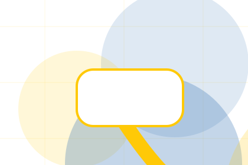
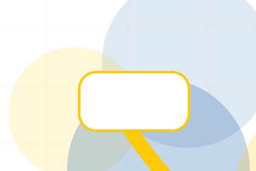
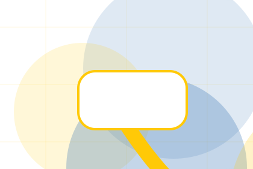
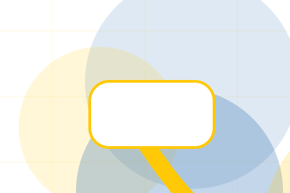
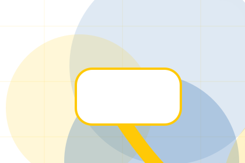

Context
Cause gives the page a specific angle instead of repeating the navigation label.
Nonprofit
Transparent donation impact flow for trust and contribution.

Home / 03
Urgency adds professional context to the home route, using the transparent donation impact flow structure to support trust and contribution before visitors choose a next step.
Good uses impact story cards and focused copy to make the decision easier to scan, aligning the section with trust and contribution rather than filling space.
Open MissionUrgency gives the page a specific angle instead of repeating the navigation label.
The impact story cards show what to compare, what to avoid, and what matters most for nonprofit, charity & social impact visitors.

The final cue points to a useful internal route so the section keeps the journey moving.
Home / 04
Promise defines the better state Good is built to create, with enough detail to make the promise believable.
A donor site with bold yellow impact modules, transparent metrics, story cards, and donation selector. The section grounds that direction in concrete benefits, visible tradeoffs, and a next route visitors can use when the promise feels relevant.
Open ImpactPromise defines what becomes clearer, easier, or safer when Good is the chosen route.
The benefit is tied to trust and contribution, not a vague quality claim.
Visitors get a linked path to compare the promise against services, standards, or examples.
Home / 05
Impact shows what changes after the work: clearer decisions, visible progress, and proof points that connect the offer to real outcomes.
The layout connects before-and-after thinking with measured outcomes, making the result easy to scan without promising what the business cannot guarantee.
Open ProgramsThe uncertainty, delay, or missed opportunity visitors bring into impact.
The clearer, safer, or more valuable state Good is designed to support.
The visible cue that connects impact to a believable decision, not a loose claim.
Home / 06
Programs explains the practical scope, best-fit situations, and expected outcome so nonprofit visitors can compare options without decoding jargon.
The section keeps the offer concrete: what is included, who it is best for, what decision it supports, and which linked route gives the deeper detail.
Open DonateGood structures programs around best fit, what changes, and a clear next route so visitors can compare the block quickly before they donate today.
Donate TodayHome / 07
Good closes the home route with a clear action, a quick reminder of the value, and a low-friction way to donate today.
Visitors who are ready can use the primary action. Visitors who are still comparing can scan the section links, proof, and support routes before they donate today.
Open Volunteer

Use the primary CTA when the fit is clear and timing matters.
Yellow impact hero
Select the closest route and Good keeps the next step, proof, and follow-up expectation aligned with trust and contribution.
Home / 09
Questions handles buying doubts directly so visitors can understand timing, fit, limits, and the safest next step.
Answers are short by design: enough to remove hesitation, not so much that the page turns into documentation before the visitor can act.
Open ContactQuestions gives the page a specific angle instead of repeating the navigation label.
The impact story cards show what to compare, what to avoid, and what matters most for nonprofit, charity & social impact visitors.

The final cue points to a useful internal route so the section keeps the journey moving.
Good starts with a focused intake so the recommendation matches the visitor's context, risk, timing, and readiness.
Each route explains inclusions, exclusions, documents, timing, and the decision points that affect final delivery.
The theme uses transparent donation impact flow, impact story cards, and donation selector, impact calculator, volunteer role filter rather than a shared template rhythm.
Yellow impact hero
Select the closest route and Good keeps the next step, proof, and follow-up expectation aligned with trust and contribution.
Home / 10
Good closes the home route with a clear action, a quick reminder of the value, and a low-friction way to donate today.
Visitors who are ready can use the primary action. Visitors who are still comparing can scan the section links, proof, and support routes before they donate today.
Donate TodayThe final block keeps the choice simple: act now, compare one more proof route, or send enough detail for a focused response.
Donate Todaytrust and contribution
A donor site with bold yellow impact modules, transparent metrics, story cards, and donation selector. Home ends with a direct path to donate today, plus enough context for visitors who still need to compare.
 Donate Today
Donate Today